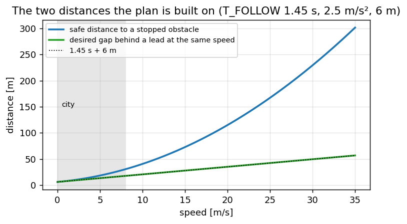
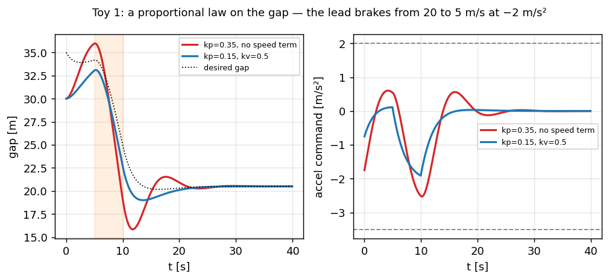
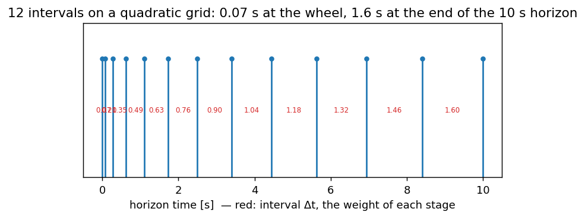
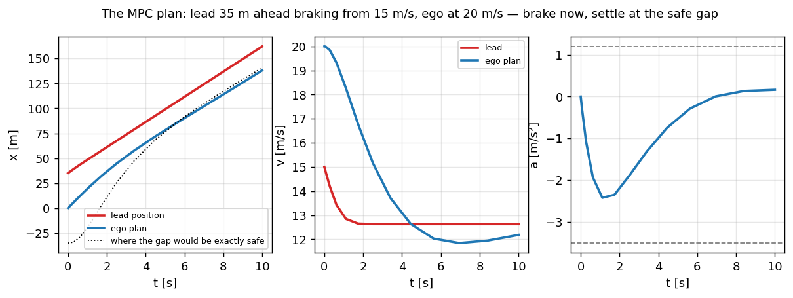

Продольный планировщик — скорость и дистанция#
Поперечные главы заканчивались кривизной. Эта заканчивается ускорением: планировщик решает, как быстро ехать и на каком расстоянии держаться за машиной впереди, закон управления превращает это в запрос ускорения, а платформа упаковывает его в штатные ACC-кадры автомобиля — намеренно через те же три сервиса, что и рулевой путь. Это замена прежнему способу — через кнопки штатного круиза, которыми стек раньше управлял скоростью: дёргать подрулевой переключатель за водителя было обходным манёвром из-за отсутствия актуатора; теперь актуатор — само ускорение.
Код: longitudinal/long_mpc.cpp (оптимизатор), longitudinal/long_planner.cpp (то, что вокруг него),
longitudinal/long_control.cpp (закон), platform/volkswagen/mqbcan.cpp (ACC_06/ACC_07/ACC_02).
Формулировка, веса и сетка — из long_mpc.py / longitudinal_planner.py openpilot; солвер — наш, а глава
заканчивается прогонами в симуляторе, которые показывают, что порт ведёт себя как надо.
Если вы не встречали ACC
Адаптивный круиз держит уставку скорости, когда дорога пуста, и временной зазор за машиной впереди, когда нет, — здесь 1.45 с плюс запас 6 м на стоянке. Всё ниже — один вопрос, заданный двенадцать раз в будущее: где мне можно быть в момент t, чтобы остановка всё ещё была комфортной?
Две дистанции, на которых всё держится#
Общие константы игрушки для всех фрагментов ниже — upstream’овские, дословно:
import math
import numpy as np
T_FOLLOW = 1.45 # desired time gap [s]
COMFORT_BRAKE = 2.5 # deceleration the safe distance assumes [m/s^2]
STOP_DISTANCE = 6.0 # gap kept at standstill [m]
A_CRUISE_MIN = -1.2 # comfort deceleration when cruising or following [m/s^2]
ACCEL_MIN, ACCEL_MAX = -3.5, 2.0 # the panda's envelope for a VW MQB [m/s^2]
def safe_distance(v_ego, t_follow=T_FOLLOW):
"""Room to stop at COMFORT_BRAKE from v_ego, plus the time gap, plus the standstill margin."""
return v_ego**2 / (2 * COMFORT_BRAKE) + t_follow * v_ego + STOP_DISTANCE
def stopped_equivalence(v_lead):
"""How much further a moving lead's stopping point is than its bumper."""
return v_lead**2 / (2 * COMFORT_BRAKE)
def desired_gap(v_ego, v_lead):
return safe_distance(v_ego) - stopped_equivalence(v_lead)
for v in (10, 20, 30):
print(f"v={v:>2} m/s: safe to a wall {safe_distance(v):6.1f} m, gap behind an equal-speed lead {desired_gap(v, v):5.1f} m")
assert abs(desired_gap(20, 20) - (T_FOLLOW * 20 + STOP_DISTANCE)) < 1e-9
Раскроем первую функцию:
Тормозной путь \(v^2 / (2a)\) выводится из классического \(v^2 - v_0^2 = 2as\) при \(v = 0\): сколько дороги проедет машина, замедляясь от \(v_{\mathrm{ego}}\) до нуля с комфортным \(2.5\) м/с² — пределом не шин, а пассажиров. На 20 м/с это 80 м, на 30 м/с — 180 м; именно этот член делает кривую квадратичной.
Временной зазор \(t_{\mathrm{follow}} \cdot v_{\mathrm{ego}}\) — дорога за 1.45 с на текущей скорости: время реакции, которое план резервирует человеку и актуатору, и та часть, что масштабирует дистанцию со скоростью так, как её чувствует водитель — 29 м на 20 м/с.
Запас в статике \(d_{\mathrm{stop}}\) — то, что должно остаться между бамперами, когда обе машины стоят: 6 м, чтобы остановка никогда не заканчивалась впритык.
Вторая функция — та же физика, увиденная со стороны лида:
Лид, едущий со скоростью \(v_{\mathrm{lead}}\), остановится не там, где он сейчас: тормозя с тем же комфортным \(a_{\mathrm{brake}}\), он встанет на \(d_{\mathrm{stopped}}\) дальше по дороге. Поэтому препятствие для MPC — положение лида плюс \(d_{\mathrm{stopped}}\): точка, где он мог бы стоять, а не где он есть, — и поэтому за движущейся машиной план может сидеть ближе, чем перед стеной. Разность двух функций — зазор, на котором план оседает:
При равных скоростях квадраты сокращаются и \(d_{\mathrm{gap}} = 1.45\,v + 6\): 35 м на 20 м/с. При сближении с более медленным лидом именно разность квадратов и требует запаса: на 25 м/с за машиной на 15 м/с она добавляет \((625 - 225)/5 = 80\) м — ровно то торможение, что показывает прогон в симуляторе в конце главы.
Два вывода, которые стоит удержать в голове. Во-первых, безопасная дистанция — это тормозной путь: она растёт как \(v^2\), и при 30 м/с это 230 м. Во-вторых, лид, который движется, возвращает вам свой тормозной путь, поэтому за машиной на вашей же скорости зазор схлопывается до линейной части: \(1.45\,v + 6\). Весь планировщик — способ жить между этими двумя кривыми.
{kind=link}

Рис. 25 Безопасная дистанция до неподвижного препятствия (квадратичная) против желаемого зазора за лидом на той же скорости (линейный). План никогда не даёт ego пересечь первую; он пытается сидеть на второй.#
Сборка 1: пропорциональный закон по зазору — и где он ломается#
Очевидный регулятор: ускоряться пропорционально тому, насколько зазор отличается от желаемого.
def follow_p(kp, kv, seconds=40.0, dt=0.05):
"""Ego behind a lead that brakes from 20 to 5 m/s at -2 m/s^2 between t=5 and t=10 s."""
v_lead, v_ego, gap = 20.0, 20.0, 30.0
log = []
for k in range(int(seconds / dt)):
t = k * dt
if 5.0 <= t < 10.0:
v_lead = max(5.0, v_lead - 2.0 * dt)
want = T_FOLLOW * v_ego + STOP_DISTANCE
a = kp * (gap - want) + kv * (v_lead - v_ego)
a = max(ACCEL_MIN, min(ACCEL_MAX, a))
v_ego = max(0.0, v_ego + a * dt)
gap += (v_lead - v_ego) * dt
log.append((t, gap, want, a))
return np.array(log)
gap_only = follow_p(kp=0.35, kv=0.0)
with_speed = follow_p(kp=0.15, kv=0.5)
print(f"gap-only law: min gap {gap_only[:, 1].min():5.1f} m, hardest brake {gap_only[:, 3].min():5.2f} m/s^2")
print(f"with speed term: min gap {with_speed[:, 1].min():5.1f} m, hardest brake {with_speed[:, 3].min():5.2f} m/s^2")
assert gap_only[:, 1].min() < with_speed[:, 1].min(), "a gap-only law overshoots into the lead"
{kind=link}

Рис. 26 Игрушка 1: P-закон только по зазору звенит после торможения лида; скоростной член его гасит. Ни один не знает, что лид сделает в следующую секунду, и ни один не умеет обменять комфорт сейчас на дистанцию потом.#
У P-закона три отказа, которые не лечатся коэффициентом. Он реагирует на зазор после того, как тот закрылся; лида, тормозящего с −2, и лида, который уже перестал тормозить, он трактует одинаково; и у него нет понятия рывка, поэтому он мгновенно требует любого ускорения, какого потребует ошибка. Каждый из трёх — утверждение о будущем, а для этого и существует оптимизатор на горизонте.
Сборка 2: горизонт — тройной интегратор, управляемый рывком#
Продольный MPC upstream настолько мал, что умещается на ладони. Объект — положение, скорость и ускорение ego, управление — рывок:
Он интегрируется на двенадцати интервалах квадратичной сетки \(t_i = 10\,(i/12)^2\): 0.07 с в начале, 1.6 с в конце 10-секундного горизонта. Ближние решения получают точность, дальний конец — дальность обзора.
При постоянном рывке на интервале длиной \(\Delta t\) три уравнения интегрируются точно — каждое есть первообразная предыдущего:
Это школьная кинематика на один уровень выше: \(\tfrac12 a t^2\) становится \(\tfrac16 j t^3\). Поскольку объект линейный, вся 10-секундная траектория — линейная функция двенадцати рывков; именно это делает решение ниже дешёвым: нелинейна только стоимость, никогда не физика. Пример узла: из \(v = 20\), \(a = 0\) один интервал в 1 с при \(j = -1\) м/с³ заканчивается в \(a = -1\), \(v = 19.5\), \(x = 19.83\) м.
N = 12
T = np.array([10.0 * (i / N) ** 2 for i in range(N + 1)])
DT = np.diff(T)
def rollout(u, v0, a0):
"""Exact integration of constant jerk per interval — the plant is linear."""
x, v, a = np.zeros(N + 1), np.zeros(N + 1), np.zeros(N + 1)
v[0], a[0] = v0, a0
for k in range(N):
d = DT[k]
x[k + 1] = x[k] + v[k] * d + 0.5 * a[k] * d * d + u[k] * d**3 / 6
v[k + 1] = v[k] + a[k] * d + 0.5 * u[k] * d * d
a[k + 1] = a[k] + u[k] * d
return x, v, a
print("grid [s]:", np.round(T, 2))
print("first interval %.3f s, last %.2f s" % (DT[0], DT[-1]))
assert abs(T[6] - 2.5) < 1e-9 and abs(T[-1] - 10.0) < 1e-9
{kind=link}

Рис. 27 Сетка горизонта. Красные числа — длина каждого интервала и, поскольку acados масштабирует стоимость каждой стадии её шагом по времени, её вес. Без этого масштабирования та же стоимость даёт план куда мягче upstream’овского.#
Стоимость — один член по препятствию плюс рывок, с числами upstream: X_EGO_OBSTACLE_COST = 3,
J_EGO_COST = 5, A_CHANGE_COST = 200 (гаснет на 1–2 с) и мягкие ограничения с LIMIT_COST = 1e6 на
границы скорости и ускорения и DANGER_ZONE_COST = 100 за вход в 0.75 безопасной дистанции:
Стоимость по слагаемым:
\(r_{\mathrm{obs},i}\) — ошибка зазора в секундах: числитель \(g = (x_{\mathrm{obs}} - x) - d_{\mathrm{safe}}(v)\) — на сколько метров ego не дотягивает до безопасной дистанции (или перебирает), а деление на \(v + 10\) переводит метры примерно в «секунды до препятствия»: ошибка в 10 м — много на 5 м/с (0.67 с) и мало на 30 м/с (0.25 с). \(+10\) держит член конечным на стоянке. План целится в \(g = 0\) — ровно безопасная дистанция от места, где лид мог бы встать, потому что \(x_{\mathrm{obs}}\) — положение лида плюс \(d_{\mathrm{stopped}}\).
\(5\,j_i^2\) — цена рывка: комфорт — это производная ускорения, а квадрат делает один большой толчок дороже двух маленьких — поэтому план ниже наращивает торможение плавно, а не ступенькой.
\(200\,w_i\,(a_i - a^{\mathrm{prev}}_i)^2\) — «не противоречь тому, что просил тик назад», где \(w_i\) гаснет с 1 при \(t \le 1\) с до 0 при 2 с: ближнее будущее — обязательство, дальнее свободно меняться. Это то, что не даёт запросу дрожать между пересчётами.
\(\Delta t_i\) перед каждой стадией — интегральная трактовка суммы в acados: стадия в 1.6 с весит в 23 раза больше стадии в 0.07 с; без этого те же веса дают план втрое мягче.
Штрафы — односторонние квадраты: \(10^6\,\max(0, a_{\min} - a_i)^2\) и подобные — стена, на которую солвер может опереться, но не пройти, — и \(100\,\max(0, -h_{\mathrm{danger}})^2\) за вход в \(0.75\,d_{\mathrm{safe}}\) — стена мягче: «так близко — только когда иначе нельзя».
def residuals(u, v0, a0, x_obs, a_min=ACCEL_MIN, a_max=1.2):
"""upstream's cost as a residual vector, each stage scaled by sqrt(dt) like acados does."""
x, v, a = rollout(u, v0, a0)
sc = np.sqrt(np.append(DT, 1.0))
r = []
for i in range(N + 1):
g = (x_obs[i] - x[i]) - safe_distance(v[i])
r.append(sc[i] * math.sqrt(3.0) * g / (v[i] + 10.0))
if i < N:
r.append(sc[i] * math.sqrt(5.0) * u[i])
for i in range(N):
z = sc[i] * 1000.0 # sqrt(LIMIT_COST)
r += [z * max(0.0, -v[i]), z * max(0.0, a_min - a[i]), z * max(0.0, a[i] - a_max)]
danger = (x_obs[i] - x[i]) - 0.75 * safe_distance(v[i])
r.append(sc[i] * 10.0 * max(0.0, -danger / (v[i] + 10.0))) # sqrt(DANGER_ZONE_COST)
return np.array(r)
def solve(v0, a0, x_obs, iters=60):
"""Gauss-Newton with a backtracking step: twelve unknowns, a linear plant, a mildly nonlinear cost."""
u = np.zeros(N)
for _ in range(iters):
r = residuals(u, v0, a0, x_obs)
J = np.zeros((len(r), N))
for k in range(N):
du = np.zeros(N); du[k] = 1e-6
J[:, k] = (residuals(u + du, v0, a0, x_obs) - r) / 1e-6
step = np.linalg.solve(J.T @ J + 1e-3 * np.eye(N), -J.T @ r)
for alpha in (1.0, 0.5, 0.25, 0.125):
r_try = residuals(u + alpha * step, v0, a0, x_obs)
if r_try @ r_try < r @ r:
u = u + alpha * step
break
else:
break
return rollout(u, v0, a0)
def lead_trajectory(x_lead, v_lead, a_lead, tau=1.5):
"""upstream's extrapolate_lead: acceleration decays as exp(-tau t^2/2), speed never reverses."""
xs, vs, x, v = [], [], x_lead, v_lead
for i in range(N + 1):
d = 0.0 if i == 0 else DT[i - 1]
v = max(0.0, v + d * a_lead * math.exp(-tau * T[i] ** 2 / 2))
x += d * v
xs.append(x); vs.append(v)
return np.array(xs), np.array(vs)
x_lead, v_lead = lead_trajectory(35.0, 15.0, -3.0)
x_obs = x_lead + stopped_equivalence(v_lead)
x, v, a = solve(20.0, 0.0, x_obs)
print(f"lead 35 m ahead at 15 m/s braking, ego 20 m/s: a within 1.2 s = {a[T <= 1.2].min():.2f} m/s^2, "
f"speed at 10 s = {v[-1]:.1f} m/s, closest approach {np.min(x_lead - x):.1f} m")
assert np.all(x < x_lead), "the plan must never cross the lead"
assert a.min() >= ACCEL_MIN - 0.3
Будущее самого лида экстраполируется с затухающим ускорением:
Машина, тормозящая сейчас, не будет тормозить вечно, и гауссово затухание говорит это мягко: всего лид может потерять \(\int_0^\infty a_0 e^{-\tau t^2/2}\,\mathrm{d}t = a_0\sqrt{\pi / 2\tau} \approx 1.02\,a_0\) скорости — торможение с \(-3\) м/с² стоит ему около 3 м/с, большую часть — в первую секунду. \(\max(0, \cdot)\) — единственная нефизичная оговорка, которая нужна модели: машины не едут назад. Лид из фрагмента на 15 м/с при −3 к концу горизонта едет около 12 м/с, а не стоит.
{kind=link}

Рис. 28 То же решение, что во фрагменте: тормозить сейчас, сильнее комфортных −1.2, потому что лид тормозит, и осесть там, где зазор равен безопасной дистанции от точки остановки лида.#
Отсюда возникают три свойства, которых у P-закона быть не могло. План тормозит до того, как зазор
закрылся, потому что предсказанная траектория лида уже сидит внутри стоимости. Он тормозит сильнее
круизного лимита, когда нужно, — A_CRUISE_MIN формирует круизное препятствие ниже, а жёсткую границу
задаёт панда с её −3.5. И за каждый рывок назначена цена, так что запрос гладок по построению, а не из-за
фильтра на выходе.
Солвер не upstream’овский — задача да
upstream генерирует эту задачу в C через acados_template и решает SQP-RTI. Этого генератора в сборке
репозитория нет, поэтому long_mpc.cpp решает идентичную формулировку плотным Гауссом–Ньютоном
(аналитический якобиан, демпфирование Левенберга, бэктрекинг, тёплый старт). Две вещи, на которые ушёл день
и которые стоит знать: масштабирование стадий по Δt выше, и то, что полный гаусс-ньютоновский шаг из
покоя перепрыгивает прямо в штраф на границе с весом 1e6, так что шагу нужен линейный поиск — а одно лишь
раздувание демпфирования заставляет его ползти. Сходимость — 4–9 итераций на тёплом старте, меньше миллисекунды.
Сборка 3: уставка скорости как призрачная машина#
Без лида та же стоимость гонит к круизному препятствию: где была бы машина, уже едущая на уставке, — удержанная в пределах того, чего ego физически достигнет на этом горизонте, чтобы солвер никогда не стартовал вне собственных границ.
def cruise_obstacle(v_ego, v_cruise, a_min=A_CRUISE_MIN, a_max=1.2):
v_lower = v_ego + T * a_min * 1.05
v_upper = v_ego + T * a_max * 1.05
v_c = np.clip(v_cruise, v_lower, v_upper)
x_c = np.cumsum(np.append(0.0, DT) * v_c)
return x_c + safe_distance(v_c)
x_c = cruise_obstacle(10.0, 25.0)
x, v, a = solve(10.0, 0.0, x_c)
print(f"from 10 m/s toward a 25 m/s set speed: a(0.6 s) = {a[3]:.2f}, a(2.5 s) = {a[6]:.2f} m/s^2, v(10 s) = {v[-1]:.1f} m/s")
assert 0.7 < a[6] <= 1.25, "cruising accelerates at the ceiling, not above it"
В символах, где \(T_i\) — времена сетки, а \(\Delta T_i\) — их разности:
Клип — это честность призрачной машины: она может быть лишь там, где оказалось бы ego, разгоняясь на комфортном потолке (\(1.2\) м/с², плюс 5 % запаса, чтобы граница не была активна на старте), — иначе член препятствия требовал бы ускорения, запрещённого границами, и солвер стартовал бы в штрафе. Прибавка \(d_{\mathrm{safe}}(v_c)\) ставит препятствие на полную безопасную дистанцию впереди призрака, так что следовать за ним с \(g = 0\) и есть ехать на уставке. При \(v_{\mathrm{ego}} = 10\), уставке 25: \(v_c\) растёт как \(10 + 1.26\,T_i\) и достигает 25 при \(T \approx 11.9\) с — за горизонтом, так что весь 10-секундный план — рампа на потолке.

Рис. 29 Без лида: уставка — призрачная машина; план гонится за ней с зависящим от скорости потолком (1.6 м/с² с места, 0.6 на 40 м/с) и оседает на её скорости.#
Вокруг MPC живут ещё две формулы. Лимит в повороте делит один бюджет ускорения между осями:
\(a_y = v^2\kappa\) — центростремительное ускорение с \(\kappa = \tan\delta/L \approx \delta/L\) велосипедной модели и вложенным передаточным «руль → колесо»; корень — Пифагор на круге трения: у шины одно общее сцепление, и что забрал поворот, того не остаётся разгону. На 15 м/с и 10° руля: \(a_y = 225 \cdot 0.1745 / (15.6 \cdot 2.636) \approx 0.95\), значит \(a_x \le \sqrt{1.7^2 - 0.95^2} \approx 1.4\) м/с² — ограничение не срабатывает. На 20 м/с и 20°: \(a_y \approx 3.4\), бюджет исчерпан, ускорения в этом такте нет.
Превью кривизны превращает поворот впереди в потолок скорости тем же центростремительным соотношением:
\(R = 150\) м даёт 16.4 м/с; \(R = 250\) м, край мёртвой зоны, — 21.2 м/с; поэтому на дугах трассы highway R 391–699 м при 25 м/с потолок не срабатывает (их \(a_y\) — 0.9–1.6).
Планировщик вокруг MPC (long_planner.cpp) делает ещё четыре вещи, которые делает upstream: фильтрует
желаемую скорость с постоянной времени 2 с и интегрирует её вперёд по плану, ограничивает ускорение по
скорости и по повороту (дуга на 20 м/с при 60° руля почти ничего не оставляет продольному каналу), верит
лиду модели только выше prob 0.5 и только на нашем пути и поднимает FCW, когда план три тика подряд
предсказывает столкновение внутри 5 с. Этот стек добавляет одну свою вещь: превью кривизны по слитому пути
ограничивает уставку — никогда не текущую скорость, — чтобы к повороту подъезжали заранее, а не
обнаруживали его в упор.
Замкнуть контур в MetaDrive#
Стенд изображает машину: скриптованный лид, движущийся по полосе с заданной скоростью, и актуатор, превращающий запрос ускорения в педальную ось MetaDrive (измеренный feedforward — газ 0.3 даёт 2.84 м/с² на этой машине — плюс небольшой внутренний контур, как ECU замыкает свой):
cd scripts
python3 -m sim.eval --track long_straight --scenario lead_const --speed 25 # steady 15 m/s lead
python3 -m sim.eval --track long_straight --scenario lead_brake --speed 22 # lead 20 → 5 m/s at −2
python3 -m sim.eval --track long_straight --scenario lead_stop --speed 20 # lead brakes to a stop
python3 -m sim.eval --track long_straight --scenario stationary --speed 20 # stopped car 120 m ahead
python3 -m sim.eval --track long_straight --scenario none --long --speed 25 # cruise alone
сценарий |
мин. зазор |
зазор в конце |
желаемый |
сильнейшее торможение |
итог |
|---|---|---|---|---|---|
круиз без лида, уставка 25 м/с |
— |
— |
— |
−0.02 |
25.0 м/с удержаны, достигнуты за 22.6 с, рывок p95 0.16 м/с³ |
лид 15 м/с, ego с 25 |
27.7 м |
27.7 м |
27.7 м |
−2.42 |
оседает ровно на желаемом зазоре |
лид 20 → 5 м/с при −2 |
10.3 м |
13.3 м |
13.3 м |
−2.52 |
TTC не ниже 4.2 с |
лид 15 → 0 при −2.5 |
4.6 м |
4.6 м |
6.0 м |
−2.90 |
остановка; удержание |
стоящая машина в 120 м |
5.4 м |
5.4 м |
6.0 м |
−2.44 |
остановка; TTC мин. 3.1 с |

Рис. 30 Пять встреч в MetaDrive: без контакта, конверт панды не тронут, зазоры на стоянке внутри стоп-дистанции 6 м.#
Где ломается#
Превью кривизны принимает шум за поворот. С измеренными 0.15 м разброса пути на 20 м квадратичная аппроксимация 25 м пути говорит \(R \approx 200\) м на прямой, и первая версия тихо срезала уставку до 19 м/с. Одно длинное окно, медиана, НЧ-фильтр 2 с и мёртвая зона при \(R < 250\) м лечат это в симуляторе — на дороге смотрите
v_curvвcontrol/long_plan, прежде чем доверять.Лид — зрение, не радар.
long_plan.lead_sourceназывает это явно —visionсегодня,none, чтобы планировать только по уставке,radarзарезервирован (ни одна платформа не декодирует объекты радара; он откатывается на vision и сообщает об этом). У лида модели нет доплера; его скорость и ускорение выведены.prob 0.5— гейт,prob 0.9— гейт FCW, а лид дальше 2 м от нашего пути игнорируется. Безрадарный фолбэк upstream — тот же, но у upstream на большинстве машин ещё и радар.Модель актуатора. В симуляторе ускорение становится педалью через калиброванную карту; в машине это делают мотор и ESP со своей динамикой. Задержка 0.15 с — число upstream для VW, не измеренное на этой машине.
Солвер. Гаусс–Ньютон — не SQP-RTI; тесты закрепляют формулировку (дистанции, сетка, границы) и поведение (осесть на желаемом зазоре, остановиться на стоп-дистанции), а не точные числа upstream.
Приёмка#
Игрушка 1 воспроизводится: закон только по зазору подходит к лиду ближе, чем демпфированный;
фрагмент MPC тормозит в первые 1.2 с за тормозящим лидом и никогда не планирует сквозь него;
круизный фрагмент ускоряется на потолке, не выше;
по одному предложению: почему уставка — препятствие и почему
stay_stoppedне должен читать скорость.
Упражнение#
Поменяйте
T_FOLLOWна 1.0 и 1.8 во фрагменте MPC — как сдвигается точка наибольшего сближения?Обнулите
A_CHANGE_COST(уберите член) и перерешайте с плана \(a=1\): что происходит с \(j\)?Дайте круизному препятствию уставку ниже текущей скорости — какой узел связывается первым?
В
sim.evalзапуститеlead_brakeс--vision-latency-ms 300: где проявится лишняя задержка?
Куда дальше#
Продольное управление — закон, который превращает этот план в ускорение, и его состояния остановки.
fp — поперечный оптимизатор; идея горизонта та же, объект — нет.
Платформа — кадры, счётчики и супервизор панды, общие с ACC-путём.
Предупреждения — FCW, который поднимает этот планировщик, и тот, что независимо поднимает
safety_warn.
Дальше: Модель машины (недоворот)